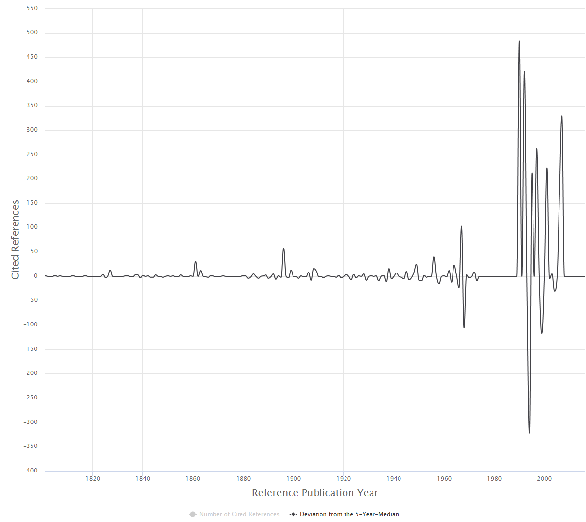

Introduction
Which are the most important papers in the history of a field? On whose shoulders of giants does an author stand? Where to look for the intellectual roots of a research topic? These questions can be answered by using the program CitedReferencesExplorer (CRExplorer).
The CRExplorer uses data from Web of Science (Clarivate Analytics) or Scopus (Elsevier) as input. Publication sets have to be downloaded including the references cited. The program focusses on the analysis of the cited references, in particular on the referenced publication years. Over time, "citation classics" of a field become more pronounced. When the aggregated citations are plotted along the time axis, one obtains a "spectrogram" with distinct peaks. CRExplorer visualizes this spectrogram, cleans the cited references (disambiguation), and uses a smoothing algorithm to suppress the noise.
Example study: Greenhouse Effect
The method Reference Publication Year Spectroscopy (RPYS) was developed by Werner Marx, who used it for the first time in the field of meteorology (see his study on page 11). For demonstration of the potential of the method, Figure 1 shows the citation classics concerning the discovery of the Greenhouse Effect, a basic component of climate change.
We downloaded from the Web of Science 3,244 publications containing the term Greenhouse Effect in the title or in the abstract or as a keyword. These papers contain 81,126 references to publications published over 379 years. The graph produced by the CRExplorer shows three distinct peaks during the 19th century and a few others during the first half of the 20th century.
{kind=link}

The first three pronounced peaks go back to the following publications:
- Fourier's 1827 paper, entitled Mémoire sur les températures du globe terrestre et des espaces planétaires, can be seen as the first decisive publication. Fourier found that the earth is warmer than expected. He attributed this to the phenomenon that the earth's atmosphere is transparent for solar radiation but not for the infrared radiation from the ground. Thus, he discovered the (natural) greenhouse effect.
- Tyndall's (1861) study, entitled On the absorption and radiation of heat by gases and vapours, and on the physical connexion of radiation, absorption, and conduction, proved that the earth's atmosphere has a greenhouse effect. He concluded that water vapour is the principal gas controlling air temperature.
- Arrhenius (1896, entitled On the influence of carbonic acid in the air upon the temperature of the ground) published the first study with a calculation of how changes in the levels of carbon dioxide in the atmosphere can alter the surface temperature through the greenhouse effect.
The subsequently following peaks can be assigned to the works of Chamberlin (1898), Arrhenius (1908), and Callendar (1938, 1949). These are citation classics in the climate change literature. They deal with the possibility that climatic change results from changes in the concentration of atmospheric carbon dioxide—thereby supporting the calculationtheory of Arrhenius. Whereas Chamberlin (1898) and Callendar (1938, 1949) have been written for scientists, Arrhenius (1908) book was directed at a general audience.
In sum, the discovery of the earth's greenhouse effect and the role of carbon dioxide and water vapor as greenhouse gases are no recent findings but date back to the beginning of the nineteenth century. (see here for more information.)